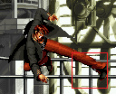

STの呼び出しとヒットストップ
KOF2000のST（ストライカー）は、本体のヒットストップに止められずに動きます。本体の攻撃が当たって画面が止まっている間もSTは登場して攻撃し、そのまま相手にヒットします。これがSTを絡めた連続技の土台です。
ヒットストップ中に呼べるか
| 当てた技 | ヒットストップ中のST呼び出し |
|---|---|
| 通常技 | 呼べない |
| ジャンプ攻撃 | 呼べる |
| 特殊技 | 呼べる |
| 必殺技 | 呼べる |
通常技のヒットストップ中は呼べないことは、当時のアルカディアのムックにも書かれていました。
呼ぶタイミングで変わること
特殊技や必殺技のヒットストップ中に呼ぶと、STもヒットストップを無視して登場して攻撃します。
- 早めに登場させると、連続技になりやすい。
- 遅めに登場させると、自キャラの硬直が（相対的に）短くなるので、その後の連続技がつなぎやすくなる。
呼んでからSTが動き出すまでの時間は、自キャラの画面上の位置で変わります。
| STアナザー庵を呼んだとき | STが動き出すフレーム |
|---|---|
| 自キャラが端に追い込まれている | 14F目 |
| 自キャラが端からある程度離れている | 1F目 |
どれくらい離れると切り替わるか、ほかのSTも同じかは調べられていません。STジョーをどのタイミングで呼ぶと地上ヒットになるかの詳しい表はクラークのフラッシングエルボー→STジョーにあります。
本体とSTのヒットストップ
- 本体の攻撃が相手に当たると、本体と相手はヒットストップで止まります。STはこのヒットストップの影響を受けず、自由に動けます。しかもヒットストップ中にSTの攻撃もヒットします。
- STに攻撃を当てた場合、そのヒットストップの間も相手本体の時間は進みます（2020/9/23に確認）。相手のSTごと攻撃して止めても、相手本体は先に動けるようになります。
- 飛び道具も同じで、打撃技を当てたヒットストップ中、相手の飛び道具は影響を受けません。クーラの弱ブレスを通常技で潰したときに弱ブレスを食らわないのはこのためです。
この仕組みの応用がSTセスへの対処（ハイアングルゲイザーのヒットストップ中にSTセスをやり過ごす）です。
STアナザー庵の突進
| 突進部分 | ヒットストップ |
|---|---|
| ガード時 | 32F |
| ヒット時 | 45F |
STアナザー庵の1段目と登場攻撃には食らい判定がありません（2015年の判定画像、2020/9/26）。突進部分の攻撃判定はSTジョーとそれほど違わず、STアナザー庵のほうがやや低いくらいです。STジョーがダウン追撃に使えるのは、判定の大きさではなく種類の違いのためだと考えられています（STジョーの叩きつけダウン）。

補足：投げ外し→ST
KOF2000には「投げ外し→ストライカー」という攻防があります。2016年には投げ返しのリターンの話題でKOF2000を思い出し（「投げ外し+ストライカー」）、2025年にも投げ抜けにリターンを持たせる例として挙げています（2016/11/2、2025/5/20）。具体的なレシピは書かれていません。
出典
- 2020/9/6～7の連投：呼べる技・ヒットストップを無視・ヒットストップ中も自由に動ける・位置で変わる登場・早め・遅め・突進のヒットストップ・STジョーとの比較
- 2020/9/8：アルカディアのムック
- 2020/9/23：STに当てたヒットストップ中に相手の時間が進む
- 2020/10/10：クーラの弱ブレスとST。2020/10/18にはヒットストップの原則（双方同じだけ止まる）と例外、飛び道具とSTは本体のヒットストップを無視、ヒットストップ中はGC不可、という一般的な整理もあります。
気になること
- STが相手に与えたヒットストップ中は、自キャラの攻撃はヒットしないかもしれない。STダックなどで調べればいいかも（2020/9/6）。
- 相手のSTを打撃で追い払ったとき、STの攻撃判定は残るか（2020/9/6）。
- STアナザー庵が1F目と14F目のどちらで動き出すかの境目の距離。